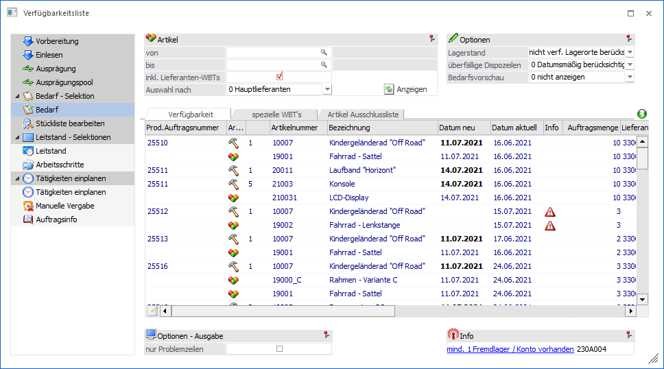
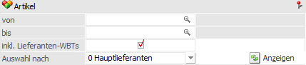
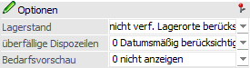
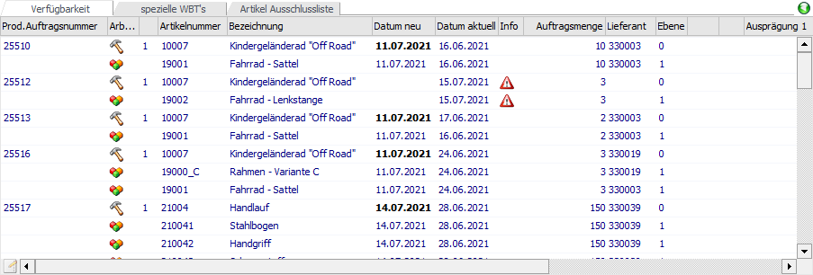
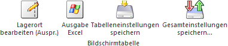
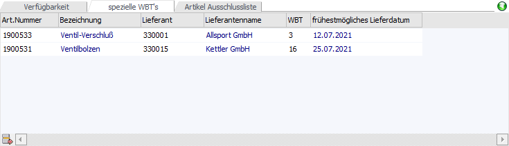
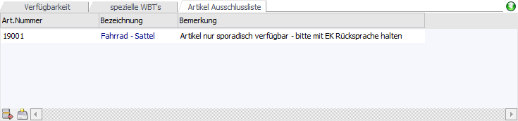
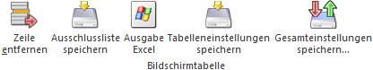
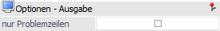
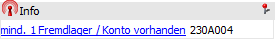

In dem Bereich "Verfügbarkeit" findet die eigentlich "Verfügbarkeitsprüfung" statt. Folgende Tätigkeiten sind hierbei möglich:
ü Ausgabe der
Verfügbarkeitsliste
Die Liste der Artikel kann am Bildschirm oder Drucker
ausgegeben werden.
ü Übergabe eines neuen
Produktionsdatums
Das neue Produktionsdatum (manuell oder automatisch
hinterlegt) kann an die Fertig- und Halbfertigprodukte übergeben werden.
Hierdurch würden ggfs. eingeplante Arbeitsschritte (Tätigkeiten) wieder
ausgeplant und mit dem neuen Datum vorbesetzt. Zusätzlich würde das Datum an die
Komponenten übergeben werden, was wiederum eine Änderung der Disposition zur
Folge hätte.
Hinweis
Das neue Dispodatum bildet dann die Grundlage für einen möglichen neuen Bestellvorschlag. Die Erstellung einer Bestellung erfolgt nicht automatisch!
Hinweis
Neben dem Programm Verfügbarkeitsliste kann die Verfügbarkeitsprüfung über verschiedene Wege aufgerufen werden:
ü Der Bildschirm wird automatisch bei der Anlage eines neuen Produktionsauftrags geöffnet. Die Anlage eines Auftrags kann dabei über die Produktionsvorbereitung, das Erfassen eines Produktionsauftrags aus der Belegerfassung der WinLine FAKT heraus oder über das Produktionsauftrag einlesen geschehen.
Hinweis
Hierzu muss in den PPS-Parametern (Bereich "Produktionsauftragsanlage") die Option "Artikelverfügbarkeit prüfen" aktiviert worden sein.
ü Es wird der Punkt "Bedarf" innerhalb der linken Navigation angewählt. Die Navigation steht wiederum in vielen Programmen (z.B. Leitstand) zur Verfügung.

Im oberen Bereich des Bildschirms können folgende Einstellungen für die Verfügbarkeitsprüfung vorgenommen werden:
Artikel

Hier können weitere Selektionen bzw. Einstellungen getroffen werden. Die Einstellungen "inkl. Lieferanten-WBTs" und "Auswahl nach" werden benutzerspezifisch gespeichert.
Ø Artikel von / bis
An dieser Stelle kann durch die Hinterlegung einer Artikelnummer auf spezielle Problemkomponenten der gerade angezeigten Verfügbarkeitsliste eingegrenzt werden.
Ø inkl. Lieferanten-WBTs
Durch Aktivierung dieser Option werden bei der Verfügbarkeitsprüfung auch Lieferanten und deren Wiederbeschaffungstage berücksichtigt (ansonsten nur der Lagerstand und ggfs. offene Dispozeilen). Welcher Lieferant dabei ausschlaggebend ist, wird über die Option "Auswahl nach" definiert.
Ø Auswahl nach
Hier kann eingestellt werden, nach welchem Lieferanten die Verfügbarkeit der Komponenten geprüft werden soll. Dabei stehen folgende Einstellungen zur Auswahl:
ü 0 - Hauptlieferanten
ü 1 - schnellstem Lieferanten
ü 2 - billigstem Lieferanten
Hinweis
Auf Grundlage dieser Einstellung wird bei Problemzeilen der "passende" Lieferant ermittelt und dessen Wiederbeschaffungstage für den Vorschlag des neuen Produktionsdatums verwendet.
Dieses setzt voraus, dass mindestens ein Lieferant mit Wiederbeschaffungstagen eingetragen wurde. Sind zwei Lieferanten mit z.B. Status "A" hinterlegt und einer der beiden hat einen Kontrakt, so wird jener mit Kontrakt bevorzugt behandelt.
Ø Anzeigen
Durch Anwahl dieses Buttons wird die Tabelle "Verfügbarkeit" gemäß aller zuvor getroffenen Einstellungen gefüllt bzw. aktualisiert.
Optionen

In diesem Bereich können diverse Option zur Prüfung definiert werden, wobei alle Hinterlegungen benutzerspezifisch gespeichert werden.
Ø Lagerstand
An dieser Stelle können mit Hilfe einer Mehrfachauswahl die Hauptparameter der Prüfung definiert werden.
ü Nur Lagerstandsprüfung
Wenn
diese Option aktiviert ist, dann wird die Verfügbarkeitsprüfung nur anhand des
aktuellen Lagerstandes durchgeführt, d.h. alle weiteren Dispositionszeilen
werden ignoriert.
Beispiel
Am 05.06.2021 wird ein
Kundenauftrag in WinLine FAKT über 1 Fahrrad-Sattel (Lagerstand 1 Stk. - 10
Wiederbeschaffungstage) erfasst (Lieferdatum 07.06.2021) und zusätzlich für 1
Herrenfahrrad ein Produktionsauftrag erstellt (Produktionstyp "Startproduktion"
- Produktionsdatum 10.06.2021). Bei der Produktion des Fahrrads wird auch 1
Sattel benötigt.
Bei deaktivierter Checkbox erfolgt die Verfügbarkeitsprüfung
chronologisch und bezieht alle Dispositionszeilen ein. Bei dieser Art der
Prüfung wären nicht genügten Fahrrad-Sättel am Lager und die Komponente würde in
der Verfügbarkeitstabelle
erscheinen:
Lagerstand
05.06.2021 1
Stk.
-
Verkauf
07.06.2021 1
Stk.
= verfügbarer Bestand für
PPS-Auftrag am
10.06.2021 0 Stk.
Achtung
Wenn nur 4 Wiederbeschaffungstage im Artikel eingestellt wären, dann würde der Fahrrad-Sattel in der Verfügbarkeitstabelle nicht erscheinen, da die Komponente rechtzeitig nachbestellt werden könnte.
Beispiel
Bei aktivierter Checkbox erfolgt
die Verfügbarkeitsprüfung nur aufgrund des gerade aktuellen
Lagerstandes:
Lagerstand
05.06.2010 1
Stk.
= verfügbarer Bestand für
PPS-Auftrag am
10.06.2010 1 Stk.
ü nicht verf. Lagerorte
berücksichtigen
Im Standard wird der Bestand von nicht verfügbaren Lagerorten
bei der Berechnung der verfügbaren Menge ignoriert, d.h. abgezogen. Mit Hilfe
der Option "nicht verf. Lagerorte berücksichtigen" kann dieses deaktiviert
werden.
Ø überfällige Dispozeilen
An dieser Stelle kann definiert werden, in wie fern Dispositionszeilen, welche in der Vergangenheit liegen, für die Verfügbarkeitsprüfung berücksichtigt werden sollen.
ü 0 - Datumsmäßig
berücksichtigen
Mit dieser Option findet eine Berücksichtigung der
überfälligen Dispositionszeilen gemäß des Datums statt.
Beispiel
Am 05.06.2021 wird ein
Kundenauftrag in WinLine FAKT über 10 Fahrrad-Sattel erfasst (Lieferdatum
07.06.2021) und zusätzlich für 1 Herrenfahrrad ein Produktionsauftrag erstellt
(Produktionstyp "Startproduktion" - Produktionsdatum 10.06.2021). Bei der
Produktion des Fahrrads wird auch 1 Sattel benötigt.
Am 15.06.2021 wird nun
erneut die Verfügbarkeitsprüfung durchgeführt und es wäre zu diesem Zeitpunkt 1
Sattel am Lager.
Aufgrund der Datumsberücksichtigung würde der Sattel nun dem
Kundenauftrag zugeordnet werden und würde bei dem Produktionsauftrag als
Problemzeile ausgewiesen werden.
Wäre die Reihenfolge umgekehrt (der
Produktionsauftrag ist seit dem 07.06.2021 überfällig und die Kundenlieferung
seit dem 10.06.2021), dann würde der Sattel dem Produktionsauftrag zugeordnet
werden.
ü 1 - in Summe berücksichtigen
Es
werden sämtliche überfällige Dispositionszeilen der "Vergangenheit"
zusammengerechnet. D.h.
es wird nicht unterschieden, wie lange bereits ein
Kundenauftrag, eine Lieferantenbestellung oder ein Produktionsauftrag überfällig
ist.
ü 2 - Nicht berücksichtigen
Mit
dieser Option werden überfällige Dispositionszeilen (Kundenaufträge,
Lieferantenbestellungen oder Produktionsaufträge) nicht berücksichtigt.
Ø Bedarfsvorschau
Über diese Option kann gesteuert werden, ob und wie sich, bei der Anwahl eines Artikels aus der Verfügbarkeitstabelle, die Bedarfsvorschau von WinLine FAKT öffnet.
ü 0 - nicht anzeigen
Bei der
Auswahl eines Artikels aus der Verfügbarkeitstabelle öffnet sich nicht die
Artikelbedarfsvorschau des Artikels aus WinLine FAKT.
ü 1 - Artikelbedarfsvorschau
anzeigen
Bei der Auswahl eines Artikels aus der Verfügbarkeitstabelle öffnet
sich direkt die Artikelbedarfsvorschau dieses Artikels von WinLine FAKT.
ü 2- Ausprägungsartikel
anzeigen
Bei der Auswahl eines Ausprägungsartikels bzw. des entsprechenden
zugehörigen Hauptartikels aus der Verfügbarkeitstabelle öffnet sich direkt die
Artikelbedarfsvorschau von WinLine FAKT im Register "Ausprägung".
Tabelle "Verfügbarkeit"

Nach Anwahl des Buttons "Anzeigen" wird die Verfügbarkeitsprüfung gestartet und der Tabelle all jene Komponenten (inkl. der entsprechenden Halb- und immer des Fertigartikels) aufgeführt, die nicht ausreichend am Lager sind und auch nicht rechtzeitig beschafft werden können.
Diese "Nicht-Verfügbarkeit" hat je nach gewählten Produktionstyp unterschiedliche Auswirkungen:
ü 0 - Zielproduktion
Der zu
produzierende Artikel kann nicht in der vorgegebenen Zeit gefertigt werden, d.h.
das Zieldatum verlagert sich auf einen späteren Zeitpunkt.
ü 1 - Startproduktion
Der zu
produzierende Artikel benötigt einen (viel) längeren Zeitraum um gefertigt zu
werden.
Folgende Spalten stehen in der Tabelle zur Verfügung:
Ø Prod. Auftragsnummer
An dieser Stelle wird die Produktionsauftragsnummer aufgeführt.
Ø Arbeitsschritt
In dieser Spalte gibt ein Symbol an, ob es sich um einen Produktionsartikel (Halb- oder Fertigartikel) oder um eine Stücklistenkomponente handelt.
Ø Artikelnummer
An dieser Stelle wird die Artikelnummer des Produktionsartikels oder der Komponente angezeigt.
Ø Bezeichnung
An dieser Stelle wird die Artikelbezeichnung dargestellt.
Ø Datum neu
An dieser Stelle wird das Datum ausgewiesen, zu welchem die Komponente wieder am Lager ist und somit verwendet werden kann. Sollte kein Datum ermittelt werden können, so kann dieses unterschiedliche Ursachen haben:
ü Checkbox "inkl. Lieferanten-WBTs"
ist nicht aktiviert
Beim Stücklistenteil ist kein (verfügbarer) Lagerstand
oder sind keine (verfügbaren) offenen Bestellungen vorhanden. Es kann daher kein
neues Datum berechnet werden.
ü Checkbox "inkl. Lieferanten-WBTs"
ist aktiviert
Bei der Komponente ist kein (verfügbarer) Lagerstand vorhanden
oder es sind keine (verfügbaren) offenen Bestellungen vorhanden. Zusätzlich gibt
es im Artikelstamm keine Lieferanteneinträge. Es kann daher kein neues Datum
berechnet werden.
Das Datum selber ist bei Komponenten immer nur eine Information und wird an das Halb- bzw. Fertigprodukt weitergereicht, wo es wiederum manuell angepasst werden könnte. D.h. das Datum bei einem Produktionsartikel spiegelt das höchste Datum seiner Komponenten wieder.
Hinweis
Bei allen selbst zu produzierenden Artikel (Halbfertigprodukt und Fertigprodukt), kann das Datum manuell angepasst werden!
Wenn diese Änderung gespeichert wird, dann gilt dieses als neues Produktionsdatum für die hinterlegten Tätigkeiten und die Disposition der Komponenten.
Ø Datum aktuell
Es wird das Produktionsdatum aus der Auftragsanlage dargestellt.
Hinweis
Wird ein bereits eingeplanter Produktionsauftrag aufgerufen, dann wird an dieser Stelle das momentan geplante Produktionsdatum angezeigt.
Ø Info
Wenn kein neues Verfügbarkeitsdatum ermittelt werden kann, so wird das Warnsymbol neben dem Stücklistenteil angezeigt.
Ø Auftragsmenge
An dieser Stelle wird die für die Produktion benötigte Menge ausgewiesen.
Ø Lieferant
An dieser Stelle wird der Lieferant angezeigt.
Hinweis
Diese Hinterlegung kann durch die Option "Auswahl nach" beeinflusst werden.
Ø Ebene
An dieser Stelle wird die Stücklistenebene angezeigt, in welchem sich die Komponente befindet.
Ø Ausprägungs-Icon
An dieser Stelle wird bei einem Ausprägungsartikel das Icon angezeigt, welches für die Ausprägung in Menüpunkt "Ausprägungen Verwalten" in WinLine FAKT hinterlegt wurde.
Ø Ausprägung 1 / Ausprägung 2
Handelt es sich um einen Ausprägungsartikel, so wird in einzelnen Spalten das jeweilige Kürzel und die Ausprägungsbezeichnung angezeigt.
Ø Kontonummer / Name
Handelt es sich um einen Ausprägungsartikel, in welchem ein Konto hinterlegt wurde, so wird dieses hier angezeigt.
Ø Typ
Hier wird in Klarschrift angezeigt, ob es die um einen Produktionsartikel oder um Material handelt.
Tabellenbuttons

Ø Lagerort bearbeiten (Auspr.)
Dieser Button kann nur angewählt werden, wenn es sich um einen Ausprägungsartikel handelt und bei der Ausprägungsdefinition die Option "Lagerort" aktiviert wurde. Wenn dies der Fall ist, gibt es 4 weitere Bearbeitungsmöglichkeiten:
ü Lagerort bearbeiten
Wird diese Funktion
gewählt, so wird automatisch das Fenster "Lagerorte bearbeiten (Auspr.)" in der
WinLine FAKT geöffnet. Hier werden all jene Artikel angezeigt, die den gleichen
Lagerort (Ausprägung, die als Lagerort gekennzeichnet ist) hinterlegt haben, wie
bei dem gerade ausgewählten Artikel
ü Auftrag bearbeiten
Wird dieser Button
gedrückt, so wird automatisch das Fenster "Lagerorte bearbeiten (Auspr.)" in der
WinLine FAKT geöffnet. Hier werden all jene Artikel angezeigt, die den gleichen
Lagerort (Ausprägung, die als Lagerort gekennzeichnet ist) hinterlegt haben und
dem gleichen Produktionsauftrag angehören, wie bei dem gerade ausgewählten
Artikel.
ü Artikel bearbeiten
Wird dieser Button
gedrückt, so wird automatisch das Fenster "Lagerorte bearbeiten (Auspr.)" in der
WinLine FAKT geöffnet. Hier wird automatisch der gerade ausgewählten Artikel
angezeigt.
ü Stapel bearbeiten
Wird dieser Button
gedrückt, so wird automatisch das Fenster "Lagerorte bearbeiten (Auspr.)" in der
WinLine FAKT geöffnet. Hier wird automatisch auf die gewählte Stapelnummer
eingeschränkt.
Hinweis
Damit dieser Button aktiv ist, muss die Verfügbarkeitsliste über den separaten Menüpunkt "Verfügbarkeitsliste" aufgerufen und in der Selektion auf eine Stapelnummer eingeschränkt werden.
Ø Ausgabe Excel
Durch Anwahl des Buttons "Ausgabe Excel" wird der Inhalt der Tabelle an Microsoft Excel übergeben.
Ø Tabelleneinstellungen speichern
Die Spalten einer Tabelle können grundsätzlich an beliebige Positionen verschoben, bzw. in der Breite entsprechend angepasst werden. Durch Anwahl des Buttons "Tabelleneinstellungen speichern" werden die Einstellungen benutzerspezifisch gespeichert und bei dem nächsten Aufruf des Programmpunktes wieder vorgeschlagen.
Ø Gesamteinstellungen speichern…
Im Gegensatz zu "Tabelleneinstellungen speichern" können mit "Gesamteinstellungen speichern" mehrere Tabellenaufbauten gespeichert und nach Wunsch geladen werden. Zusätzlich werden Sonderfunktionen der Tabelle (z.B. "Spalte gruppieren") ebenfalls bei der Speicherung bedacht.
Tabelle "spezielle WBT's"

In der Tabelle "spezielle WBT´s" kann pro Komponente ein Lieferant mit Wiederbeschaffungstagen eingetragen werden. Diese getätigten Eintragungen werden automatisch in die Tabelle "Verfügbarkeit" übernommen und ersetzen die bisherigen Hinterlegungen bei den Artikeln.
Achtung
Diese Anpassungen gelten nur für die Verfügbarkeitstabelle, sowie für die Liste der Verfügbarkeitsliste. Sie werden nicht in den Artikelstamm übertragen und dienen auch nicht als Grundlage für eine Komponentenbestellung in WinLine FAKT.
Ø Art. Nummer
An dieser Stelle wird die Artikelnummer der Komponente eingetragen.
Ø Bezeichnung
Es wird die Artikelbezeichnung der gewählten Komponente ausgewiesen.
Ø Lieferant
An dieser Stelle wird der Lieferant für den Artikel hinterlegt.
Ø Lieferantenname
Es wird der Lieferantenname des gewählten Lieferanten ausgewiesen.
Ø WBT
An dieser Stelle werden die Wiederbeschaffungstage hinterlegt.
Ø frühestmögliches Lieferdatum
An dieser Stelle wird das frühestmögliche Lieferdatum (aktuelles Tagesdatum + Wiederbeschaffungstage) ausgewiesen.
Tabellenbuttons

Ø Zeile entfernen
Durch Anwahl dieses Buttons wird die markierte Zeile aus der Tabelle entfernt.
Ø Ausgabe Excel
Durch Anwahl des Buttons "Ausgabe Excel" wird der Inhalt der Tabelle an Microsoft Excel übergeben.
Ø Tabelleneinstellungen speichern
Die Spalten einer Tabelle können grundsätzlich an beliebige Positionen verschoben, bzw. in der Breite entsprechend angepasst werden. Durch Anwahl des Buttons "Tabelleneinstellungen speichern" werden die Einstellungen benutzerspezifisch gespeichert und bei dem nächsten Aufruf des Programmpunktes wieder vorgeschlagen.
Ø Gesamteinstellungen speichern…
Im Gegensatz zu "Tabelleneinstellungen speichern" können mit "Gesamteinstellungen speichern" mehrere Tabellenaufbauten gespeichert und nach Wunsch geladen werden. Zusätzlich werden Sonderfunktionen der Tabelle (z.B. "Spalte gruppieren") ebenfalls bei der Speicherung bedacht.
Tabelle "Artikel Ausschlussliste"

In der Tabelle "Artikel Ausschussliste" können jene Artikel eingeben werden, die bei der Verfügbarkeitsauswertung nicht berücksichtigt werden sollen (d.h. wenn der Button "Anzeige"). Somit kann ein bzw. können mehrere Stücklisteteile aus der Berechnung des Verfügbarkeitsdatums ausgeschlossen werden.
Achtung
Produktionsartikel können zwar in diesem Sub-Register hinterlegt werden, werden aber in der Tabelle "Verfügbarkeit" immer angezeigt, es sei denn der Produktionsartikel ist in der Stückliste mit Option "immer vom Lager" belegt.
Ø Bemerkung
Es kann eine Bemerkung für den auszuschließenden Artikel in dieser Spalte erfasst werden.
Tabellenbuttons

Ø Zeile entfernen
Durch Anwahl dieses Buttons wird die markierte Zeile aus der Tabelle entfernt.
Ø Ausschussliste speichern
Durch Anklicken dieses Buttons werden die Daten der Tabelle gespeichert und stehen somit für die spätere Verwendung immer zur Verfügung.
Ø Ausgabe Excel
Durch Anwahl des Buttons "Ausgabe Excel" wird der Inhalt der Tabelle an Microsoft Excel übergeben.
Ø Tabelleneinstellungen speichern
Die Spalten einer Tabelle können grundsätzlich an beliebige Positionen verschoben, bzw. in der Breite entsprechend angepasst werden. Durch Anwahl des Buttons "Tabelleneinstellungen speichern" werden die Einstellungen benutzerspezifisch gespeichert und bei dem nächsten Aufruf des Programmpunktes wieder vorgeschlagen.
Ø Gesamteinstellungen speichern…
Im Gegensatz zu "Tabelleneinstellungen speichern" können mit "Gesamteinstellungen speichern" mehrere Tabellenaufbauten gespeichert und nach Wunsch geladen werden. Zusätzlich werden Sonderfunktionen der Tabelle (z.B. "Spalte gruppieren") ebenfalls bei der Speicherung bedacht.
Optionen - Ausgabe

Ø nur Problemzeilen
Mit Hilfe dieser Checkbox kann gesteuert werden, ob nur jene Komponenten auf der Verfügbarkeitsliste angedruckt werden sollen, die momentan nicht zur Verfügung stehen. D.h. es werden auch jene Komponenten mit ausgegeben, die noch innerhalb des Zeitraumes bestellt werden können.
Info

Ø Fremdlager / Konto
Beim Vorhandsein von Stücklistenkomponenten mit Lagerausprägung und wenn ein Personenkonto bei der jeweiligen Ausprägung als "Fremdlager/Konto" hinterlegt wurde (siehe Menüpunkt "Ausprägungen Verwalten" in WinLine FAKT), erscheint in diesem Bereich ein entsprechender Hinweis mit Angabe der Kontonummer.
Weitere Buttons
Ø  Detailinfo anzeigen/ausblenden
Detailinfo anzeigen/ausblenden
Im oberen rechten Bereich der Verfügbarkeitstabelle kann mit diesen Buttons ein Info-Bereich für die aktuell selektierte Komponente / den aktuellen Produktionsartikel angezeigt bzw. ausgeblendet werden.